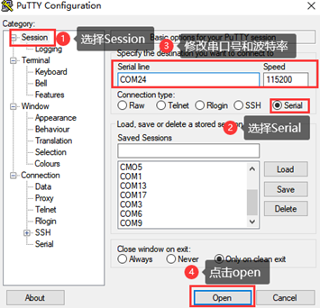
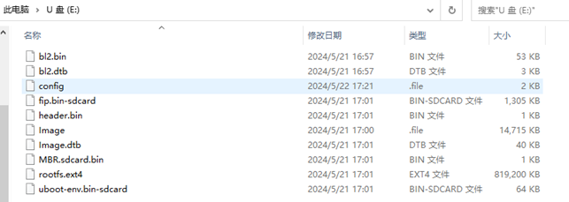
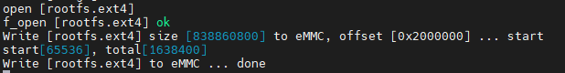

Linux5.10.140_User’s Manual_V1.0
Document classification: □ Top secret □ Secret □ Internal information ■ Open
Copyright Notice
The copyright of this manual belongs to Baoding Folinx Embedded Technology Co., Ltd. Without the written permission of our company, no organizations or individuals have the right to copy, distribute, or reproduce any part of this manual in any form, and violators will be held legally responsible.
Forlinx adheres to copyrights of all graphics and texts used in all publications in original or license-free forms.
The drivers and utilities used for the components are subject to the copyrights of the respective manufacturers. The license conditions of the respective manufacturer are to be adhered to. Related license expenses for the operating system and applications should be calculated/declared separately by the related party or its representatives.
Application Scope
This manual is mainly applicable to the Linux5.10.209 operating system on the Forlinx OK-MA35-S21 platform. Other platforms can also refer to it, but there will be differences between different platforms. Please make modifications according to the actual conditions.
Revision History
Date |
Manual Version |
SoM Version |
Carrier Board Version |
Revision History |
|---|---|---|---|---|
10/12/2024 |
V1.0 |
V1.0 |
V1.1 and Above |
OK-MA35-S21 User’s Manual Initial Version |
Overview
This manual is designed to help you quickly familiarize yourself with the product, and understand the interface functions and testing methods. It primarily covers the testing of interface functions on the development board, the methods for flashing images, and troubleshooting procedures for common issues encountered in use. During the testing process, some commands are annotated for easy understanding, focusing on practicality and sufficiency. Please refer to the “OKMA35-S Compilation Manual” provided by Forlinx for the kernel compilation, compilation method, development environment building.
The manual is primarily divided into five chapters:
Chapter 1. focuses on the overall overview of the product, and briefly introduces the development board in the interface resources, the relevant driver path in the kernel source code, and the description of the key parts of the information;
Chapter 2. covers quick startup of the product, with options for both serial port login and network login；
Chapter 3. mainly serves as an introduction to the product’s usage features and is divided into multiple sections, including the function testing of the command line in the terminal and the function testing of the QT desktop;
Chapter 4. mainly focuses on testing the usage of the product’s features such as audio, video, and camera.
Chapter 5. focuses on the product’s image update, mainly describing the method of updating the image to the storage device, and users can choose the corresponding flashing method according to the actual situation.
A description of some of the symbols and formats associated with this manual:
Format |
Meaning |
|---|---|
Note |
Note or information that requires special attention, be sure to read carefully. |
üìö |
Relevant notes on the test chapters. |
Ô∏èÔ∏èüõ§Ô∏è Ô∏è |
Indicates the related path. |
Blue font on gray background |
Refers to commands entered at the command line (Manual input required). |
Black font |
Serial port output message after entering a command |
Bold black |
Key information in the serial port output message |
// |
Interpretation of input instructions or output information |
Username@Hostname |
root@ok3568: development board serial port login account information forlinx @ ok3568: development board network login account information forlinx@ubuntu: development environment Ubuntu account information You can determine the environment for function operation through this information. |
1. OK- MA35-S21 Development Board Description
The MA35D1 is a heterogeneous multi-core microprocessor featuring a dual-core 64-bit ARM Cortex-A35 running at up to 800MHz, along with a 180MHz ARM Cortex-M4 core. It is suitable for edge gateways, lightweight AI/ML, human-machine interfaces, industrial control, and new energy applications.
The connection of OK-MA35-S21 SoM and the carrier board is board-to-board, and the main interfaces are as follows:
Note: This software manual does not describe the hardware parameters. Before referring to this manual for software development, please read the “OK-MA35-S21 Hardware Manual” under the “Hardware Data \ User Manual” path to understand the product naming rules and the hardware configuration information of the product you use, which is helpful for you to use this product.
1.1 Introduction to 5.10.140 System Software Resources
Device tree path: /OKMA35-linux-sdk/OKMA35-linux-kernel/arch/arm64/boot/dts/nuvoton/OKMA35-S2_emmc.dts
Device |
Location of driver source code in the kernel |
Device Name |
|---|---|---|
LCD Backlight Driver |
drivers/video/backlight/pwm_bl.c |
/sys/class/backlight |
USB Port |
drivers/usb/storage/ |
|
USB Mouse |
drivers/hid/usbhid/ |
/dev/input/eventX |
Ethernet |
drivers/net/ethernet/stmicro/stmmac/ dwmac- ma35d1.c |
|
TF Driver |
drivers/mmc/host/sdhci-of-ma35d1.c |
/dev/block/mmcblk1pX |
EMMC Driver |
drivers/mmc/host/sdhci-of-ma35d1.c |
/dev/block/mmcblk0pX |
OV5645 |
drivers/media/i2c/ov5645.c |
/dev/videoX |
RTC |
drivers/rtc/rtc-ma35d1.c |
/dev/rtc0 |
serial port |
drivers/tty/serial/serial/ma35d1_serial.c |
/dev/ttySX |
LED |
drivers/leds/leds-gpio.c |
|
Audio Driver |
sound/soc/ma35d1/ma35d1-i2s.c sound/soc/ma35d1/ma35d1-audio.c sound/soc/codecs/nau8822.c sound/soc/ma35d1/ma35d1-pcm.c |
/dev/snd/ |
Watchdog |
drivers/watchdog/ma35d1_wdt.c |
/dev/watchdog |
SPI |
drivers/spi/spi-ma35d1-spi.c |
/dev/spidev1.0 |
QSPI |
drivers/spi/spi-ma35d1-qspi.c |
|
SPI Nor Flash |
drivers/mtd/spi-nor/core.c |
/dev/mtdx |
PWM |
drivers/pwm/pwm-ma35d1.c |
|
Can driver |
drivers/net/can/m_can/m_can_platform.c |
|
Bluetooth driver |
drivers/bluetooth/* |
|
WIFI Driver |
drivers/net/wireless/realtek/rtl8723DU/ |
|
4G driver |
drivers/net/usb/GobiNet* |
|
I2C driver |
drivers/i2c/busses/i2c-ma35d1.c |
|
GT911 Touch Driver |
drivers/input/touchscreen/goodix.c |
/dev/input/eventX |
ADC Driver |
drivers/input/touchscreen/ma35d1_adc.c |
|
EADC Driver |
drivers/iio/adc/ma35d1_eadc.c |
1.2 Flashing and Boot Settings
The OK-MA35-S21 supports TF card and OTG flashing and eMMC boot. As shown in the figure below, the DIP switch is set for eMMC boot.
DIP Switch |
1 |
2 |
3 |
4 |
5 |
6 |
7 |
|---|---|---|---|---|---|---|---|
EMMC |
OFF |
OFF |
OFF |
OFF |
OFF |
OFF |
OFF |
TF Card |
OFF |
OFF |
OFF |
OFF |
OFF |
OFF |
ON |
USB |
OFF |
OFF |
OFF |
ON |
OFF |
OFF |
OFF |
Secure |
ON |
OFF |
OFF |
OFF |
OFF |
OFF |
OFF |
Description: The silkscreen on the right side of the SoM on the carrier board indicates the DIP switch positions for different states. You can set the switches directly according to the silkscreen.
2. Fast Startup
2.1 Preparation Before Startup
The OK-MA35-S21 development board has two system login methods, serial and network login. Hardware preparation before system startup:
12V2A or 12V3A DC Power Cable
Debugging serial cable
Network cable (for network login)
Check the activation mode of the DIP switch
Please check the DIP switch on your development board to ensure it is set to the desired boot mode. The debug serial port on the development board is a Type-C socket, allowing users to connect the development board to a PC using a USB to Type-C cable to monitor the status of the development board.
2.2 Serial Port Login
2.2.1 Serial Port Connection Settings
Description:
Serial port terminal login user: serial port terminal automatically logs in (user: root, password root).
Serial port settings: Baud rate 115200, 8 data bits, 1 stop bit, no parity bit, no flow control.
Hardware Requirements: Type-C cable required to connect PC and development boards
Software requirements: PC Windows system needs to install the super terminal software. Because the terminal software has many types, users can choose their familiar one.
In the following, we take the putty terminal software as an example to introduce the serial port login method:
Step 1: Connect the serial port number of the computer—check the serial port number from the device manager (Based on the port actually recognized by the computer ). SERIAL-A is the A-core debug serial port, and SERIAL-B is the M-core debug serial port.
Step 2: Open and set up putty, then set the serial line according to the COM port of the computer used, baud rate 115200

Step 3: After the setting, input the COM port used by the computer in Saved Sessions. The following figure takes COM24 as an example, save the settingss, open the serial port again later, and click on the saved port number.
2.2.2 Serial Login
After the terminal software on the PC side is set, connect the PC and the development board through the serial port cable, and power on after connecting the power supply. The startup information can be seen through the terminal software.
The following startup information indicates that the startup is successful, and you can enter Enter to create a new command line:

2.3 Network Login
In addition to logging in via the debugging serial port, the OK-MA35-S21 supports SSH network login to the development board and also supports FTP file transfer. The following example uses an IP address of 172.20.0.143 for the development board to illustrate the use of network tools. To modify the network IP, use the command “ifconfig eth0 172.20.0.143”. The development board and PC should be connected to the same switch or directly connected via an Ethernet cable.
2.3.1 SSH
OK-MA35-S21 development board supports SSH service and automatically starts it during boot up. After setting the IP address, the board can be used as an SSH server. You can log in to the development board via SSH for development and debugging, as well as use scp for file transfer.
Note: When logging in, enter the root username and the root password as prompted.
Note: The following is tested with the development board ip 172.20.0.143, please change it according to the actual situation, and use ifconfig eth0 172.20.0.143 to change it in the debugging serial port terminal.
Open the putty software to make the following settings (the actual IP shall prevail):
2.3.2 FTP
OK-MA35-S21 development board supports FTP service and automatically starts when powered on. Once you’ve set the IP address, it can be used as an FTP server. The following describes how to utilize the FTP tool for file transfer.
Path: OK-MA35-S21 Linux5.10.140+Qt5.12.8_User’s Profile\3-Too\FileZilla
1. Execute the following command on the development board;
root@OKMA35-S2/# mkdir -p /usr/share/empty // Create the 'empty' directory
root@OKMA35-S2/# chown root:root /usr/share/empty // Set the owner and group of this directory to 'root'
root@OKMA35-S2/# chmod 755 /usr/share/empty // Set the usage permissions
root@OKMA35-S2/# ifconfig eth0 172.20.0.143 // Configure the IP according to your own network situation
2. Install the FileZilla tool on Windows and set it up as shown in the figure below.
Note: This function requires the development board to be connected to the network cable; the host IP is set in the same network segment as the client, ensuring that the host and the client are in the same LAN; username root, password root; after successful login, you can upload, download and delete files anywhere in the file system.
Test with the development board IP 172.20.0.143. Please modify the development board IP according to the actual situation.
3. Once connected successfully, you can perform upload and download operations.
2.4 System Shutdown
In general, the power can be turned off directly. If there is data storage, function use, or other operations, avoid turning off the power arbitrarily during operation to prevent irreversible damage to the file. In such cases, only re-flashing the firmware can resolve the issue. To ensure that data is not completely written, enter the sync command to complete data synchronization before turning off the power.
Note: If the product designed by the user based on the core board has an abnormal system shutdown due to an accidental power loss in use, measures such as power-down protection can be incorporated into the design.
3. OK- MA35-S21 Platform Function Test
3.1 Interface Function Test
3.1.1 Introduction to Interface Functions
The desktop is displayed as follows after the development board booting:
3.1.2 Introduction to Touch Functions
The development board can display and support touch functionality normally when connected to an LCD screen.
3.1.3 Hardware Decoding Experience
Click the desktop icon to open the video player.
After entering, automatically play the video files in the/home/forlinx/video folder. Click the lower left corner of the video to exit.
Note: Since the vc8k decoding output is set to full screen, the exit button is covered (located in the bottom left corner). Additionally, the video progress bar may flicker due to competition between video playback and Qt.
3.1.4 Music Play Test
“music player” is a simple audio test application that can be used to test the function of the sound card or as a simple audio player.
Click the bottom left button, select /home/forlinx/audio/forlinx.mp3, and click the play button to start audio playback for testing.
3.1.5 4G Test
This test requires an Internet-capable SIM card, a description of which can be found in the Command Line Functional Tests 4G section of this manual.
The “4G” test program is used to test the external 4G module (EC20) of the OK-MA35-S21. Insert the 4G module and SIM card while the power is off, then power on the system and open the test application.

Click the start button, and the program will automatically begin the dialing process and obtain the IP, DNS, and other settings. After waiting for a few seconds, use the **ping** command in the terminal to perform the test.
3.1.6 WIFI Test
“WIFI” is a tool to configure wifi. The OK-MA35-S21 platform has the 8723du module on board by default. The wifi module exists in the system as a mean node, and this test corresponds to wlan0 (other corresponding nodes are used for multiple devices):

Select wlan0, enter the router name(the one connected to wifi) in the SSID column, enter the router password in the PAWD column, click CONNECT to the router via wifi, enter a valid ip in the IP column, and then click ping to see if the currently used wifi network is smooth.
By default, the BL-M8723DU1 module is soldered to the OK-MA35-S21 backplane, and only the wlan0 node is soldered. Take wlan0 as an example to demonstrate the use of the wifi tool.
Open the Wifi test app, enter the correct network name and password, click CONNECT, wait 5 seconds, and click STATUS to view the connection ledge.
After the connection is successful, you can click ping to test the network.
3.1.7 Network Configuration Test
When the OK-MA35-S21 starts up, the default setting of the NIC is dhcp. The two modes of dhcp and static can be selected through the “Network” configuration application, and the static mode can be configured with ip address, subnet mask, gateway, and DNS.
Select eth0 or eth1, then select DHCP, and click “Setting” at the bottom of the interface to restart the network and automatically obtain IP.
Click STATIC, select Set Static IP, enter the IP to be set in the IP column, enter the subnet mask in the netmask column, enter the gateway in the getaway column, and enter the DNS in the DNS column.
After entering the URL and clicking the ping key, the result of the ping will prompt on the left, as follows:

Note: Information such as ip set in STATIC mode is saved to the relevant configuration file of the system so each reboot will use the network information set this time; network information configured in DHCP mode, on the other hand, does not need to care about this; ip addresses are dynamically assigned every reboot.
3.1.8 Watchdog Test
“WatchDog” is an application used to test the watchdog status.
Click start to open the dog feeding function by default and feed the dog regularly. At this time, the system will not restart.
When unchecking feed dog, count down 6s and the system enters reboot. It indicates that the Watchdog function is normal.
Note: watchdog only supports three timeout settings: 0.5, 2, and 8 seconds. Setting other times will automatically adjust to these three times.
3.1.9 RTC Test
The “RTC” application allows you to view and set the current system time:
After selecting “Manual,” you can manually set the time by choosing “date” and “time,” then click “apply” to complete the settings. With the RTC backup battery installed, the time will not be lost in case of a power outage and reboot.
Click Auto to perform network timing, and click apply to perform timing successfully.
Note:
If “Unable to access the network by DNS name” pops up during network synchronization, please replace the DNS and restart the application before network synchronization;
In arm-Linux, UTC time is used by default, so after network time synchronization, it will be 8 hours ahead of Beijing time.
3.1.10 SPI Test
Click on the desktop icon to use it to test the OK-MA35-S21 on-board SPI interface. spi1 and spi2 each have a cs (Chip Select) interface, corresponding to /dev/spidev1.0 and /dev/spidev2.0, respectively.
Short the spi1 T/R pins according to the board schematic. The short circuit test does not need to consider the cs interface; if additional equipment is used for communication, the corresponding dev interface needs to be considered.
Open the test program after the completion of short circuit, and click the send button to conduct the sending and receiving test.
Click the Exit button to exit the test.
3.1.11 UART Test
Click on the desktop icon to use it to test the OKMA35 on-board UART interface.

OK-MA35-S21 serial port supports odd and even parity, 8 data bits, and 1 stop bit.
Please short the serial port to be tested before the serial port loopback test. UART1, UART10, UART11, UART14, UART15, UART13, UART8, UART5, UART0, UART2, UART12, UART4, and UART16, totaling 13 serial ports, are marked in the OK-MA35-S21 platform carrier board schematic diagram. UART0 is the debugging serial port, UART16 is the M-core debugging serial port, UART12 and UART13 are 232 levels, UART15, UART2, UART1, UART10, UART14 and UART11 are 485 levels, and UART4, UART5 and UART8 are TTL levels.
The available serial ports are UART1, UART10, UART11, UART14, UART15, UART13, UART8, UART5, UART2, UART12, and UART4, and the corresponding device names in the development board are ttyS1, ttyS10, ttyS11, ttyS14, ttyS15, ttyS13, ttyS8, ttyS5, ttyS2, ttyS12, ttyS4. Take the test of UART8 serial port as an example, short-circuit the receiving and transmitting pins of UART8 according to the schematic diagram of the development board, corresponding to PIN7 and PIN9 respectively.
Note: The 485 level serial port cannot be short-circuited for testing.

Turn on the test program after the short circuit is completed. 1. Click the third button on the second row in the top-left corner to open the settings, select the serial port and parameters such as baud rate, here choose ttyS8; 2. Click ‘’Apply’’ to successfully set the parameters. 3. Then click the first button on the second row in the top-left corner to connect. At this point, the setup is complete and testing can begin.
Click the keyboard button to send automatically. Since this is a short-circuit test, the data received by the receiving end is also displayed on the terminal. Therefore, after entering the letter ‘’r’’, the terminal will display two ‘’r’’.

3.1.12 Database Test
“Sqlite” is the sqlite3 database application:
Click to enter the database test interface, where you can see the example program books that uses sqlite in Qt.
3.1.13 Backlight Test
“BackLight” is the backlight adjustment application:
Lcd backlight brightness can be set by dragging the slider in the interface. Level 0 is no backlight (top micro screen level 0 is the highest brightness), level 1 is the highest brightness, and level 5 is the lowest brightness.
3.1.14 Camera Test
Click the “Camera” icon on the desktop to test.
Click Camera video to select the camera device.
Click camera resolution to make selection.
After setting the device and resolution, click Start to start the preview. The preview effect is shown in the following figure.
Click picture to take a picture, and the picture will be saved in the/root/directory.
Note: The photo function is available only after starting the preview.
Click Stop to stop it.
3.2 Command Line Function Test
The OK-MA35-S21 platform has various built-in command line tools available to users.
3.2.1 System Information Query
To view kernel and CPU information:
root@OKMA35-S2~# uname -a
Linux OKMA35-S2 5.10.140 #1 SMP Thu May 16 23:35:42 PDT 2024 aarch64 GNU/Linux
View operating system information:
root@OKMA35-S2/# cat /etc/issue
Welcome to OKMA35
View environment variable information:
root@OKMA35-S2/# env
USER=root
MESA_LOADER_DRIVER_OVERRIDE=swrast
SHLVL=1
LIBGL_ALWAYS_SOFTWARE=true
HOME=/
PS1=\u@\h\w#
WAYLAND_DISPLAY=wayland-1
TERM=vt102
PATH=/bin:/sbin:/usr/bin:/usr/sbin
XDG_RUNTIME_DIR=/tmp/xdg
SHELL=/bin/sh
PWD=/
EDITOR=/bin/vi
3.2.2 Temperature Test
View the temperature value:
root@OKMA35-S2/# cat /sys/class/thermal/thermal_zone0/temp
61
3.2.3 Serial Port Test
OK-MA35-S21 serial port supports odd and even parity, 8 data bits, and 1 stop bit.
13 serial ports are marked in the OK-MA35-S21 platform carrier board schematic diagram, of which UART0 is the debugging serial port, UART16 is the M-core debugging serial port, UART12 and UART13 are 232 levels, and UART4, UART5 and UART8 are TTL levels. 485-1 for UART15, 485-2 for UART2, 485-3 for UART1, 485-4 for UART10, 485-5 for UART14, and 485-6 for UART11.
The available serial ports are UART1, UART10, UART11, UART14, UART15, UART13, UART8, UART5, UART2, UART12, and UART4, and the corresponding device names in the development board are ttyS1, ttyS10, ttyS11, ttyS14, ttyS15, ttyS13, ttyS8, ttyS5, ttyS2, ttyS12, ttyS4.
3.2.3.1 485 Interface Test
The test process requires 2 x 485 interfaces to be tested. The 485 level is short-circuited to port A and port B. Take 485 _ 1 and 485 _ 2 as an example to test. Short circuit 485 _ A1 and 485 _ A2 as well as 485 _ B1 and 485 _ B2. Open the test program after the completion of short circuit.
root@OKMA35-S2/# fltest_485test /dev/ttyS15 /dev/ttyS2 //485 _ 1 sends, 485 _ 2 receives
opening serial port:/dev/ttyS15
rs485conf_bak.flags 0x3.
rs485conf_bak.delay_rts_before_send 0x0.
rs485conf_bak.delay_rts_after_send 0x80.
opening serial port:/dev/ttyS2
rs485conf_bak.flags 0x3.
rs485conf_bak.delay_rts_before_send 0x0.
rs485conf_bak.delay_rts_after_send 0x80.
uart1 send 100 byts
uart2 receive 100 bytes
uart2 receive 100 bytes
uart2 compare correct!!
uart2 test done!!
root@OKMA35-S2/# fltest_485test /dev/ttyS2 /dev/ttyS15 //485_2 sends，485_1 receives
opening serial port:/dev/ttyS2
rs485conf_bak.flags 0x3.
rs485conf_bak.delay_rts_before_send 0x0.
rs485conf_bak.delay_rts_after_send 0x80.
opening serial port:/dev/ttyS15
rs485conf_bak.flags 0x3.
rs485conf_bak.delay_rts_before_send 0x0.
rs485conf_bak.delay_rts_after_send 0x80.
uart1 send 100 byts
uart2 receive 100 bytes
uart2 receive 100 bytes
uart2 compare correct!!
uart2 test done!!
If the serial port prints the above content after execution, it indicates that the 485 communication is normal.
3.2.3.2 TTL/RS232 Interface Test
UART12 and UART13 are led out from the carrier board as RS232 levels.
UART4, UART5 and UART8 are led out from the carrier board as TTL levels:
TTL level and RS232 level need to short TX and RX pins. Take UART5 as an example for TTL test. Short UART5 _ RX (PIN2) and UART5 _ TX (PIN4). Open the test program after short circuit.
root@OKMA35-S2/# fltest_uarttest -d /dev/ttyS5
Welcome to uart test
Send test data:
forlinx_uart_test.1234567890...
Read Test Data finished,Read:
forlinx_uart_test.1234567890...
If the above content is printed after execution, it indicates that the serial communication is normal.
3.2.4 SPI Test
2 x SPI interfaces are led out from the OK-MA35-S21 carrier board, which are configured as spidev in the default software for loopback test. /Dev/spidev1.0 corresponds to SPI0 on the carrier board, and /dev/spidev2.0 corresponds to SPI1 on the carrier board.
For testing with SPI0, refer to the schematic to short SPI0_MOSI (PIN1) with SPI0_MISO (PIN2), and then use the following commands for testing.
Without shorting the SPI0_ MOSI and the SPI0_ MISO, execute the test command:
root@OKMA35-S2/# fltest_spidev_test -D /dev/spidev1.0
spi mode: 0
bits per word: 8
max speed: 500000 Hz (500 KHz)
00 00 00 00 00 00
00 00 00 00 00 00
00 00 00 00 00 00
00 00 00 00 00 00
00 00 00 00 00 00
00 00 00 00 00 00
00 00
Short circuit the SPI0_ MOSI to the SPI0_ MISO and execute the test command:
root@OKMA35-S2/# fltest_spidev_test -D /dev/spidev1.0
spi mode: 0
bits per word: 8
max speed: 500000 Hz (500 KHz)
FF FF FF FF FF FF
40 00 00 00 00 95
FF FF FF FF FF FF
FF FF FF FF FF FF
FF FF FF FF FF FF
DE AD BE EF BA AD
F0 0D
3.2.5 QSPI Test
Note: If the system has been modified to use FLASH-NOR to boot the system, do not do the following test operation, otherwise the uboot in FLASH-NOR will be damaged.
The OK-MA35-S21 is externally connected to the FLASH-NOR storage device through the QSPI, and the interface function is verified by mounting the read-write device.
1. Check if a QSPI device exists in the system mtd.
root@OKMA35-S2/# cat /proc/mtd
dev: size erasesize name
mtd0: 01000000 00001000 "spi0.0"
2. Use the dd command to write a test of the FLASH-NOR interface speed:
root@OKMA35-S2/# dd if=/dev/zero of=/dev/mtdblock0 bs=1M count=10
10+0 records in
10+0 records out
10485760 bytes (10 MB, 10 MiB) copied, 135.098 s, 77.6 kB/s
3. Use the dd command for the FLASH-NOR interface speed read test:
root@OKMA35-S2/# dd if=/dev/mtdblock0 of=/dev/null bs=1M count=10
10+0 records in
10+0 records out
10485760 bytes (10 MB, 10 MiB) copied, 2.97665 s, 3.5 MB/s
3.2.6 Watchdog Test
Watchdog is a function often used in embedded systems. The device node of watchdog in OK-MA35-S21 is/dev/watchdog. This test provides two test procedures, and the user can choose one of them to test according to the actual situation.
Start fltest_watchdog, set the timeout to 8 seconds, and regularly feed the watchdog.
root@OKMA35-S2/# fltest_watchdog
Watchdog Ticking Away!
This command turns on the watchdog and performs a feed, so the system does not reboot.
Note: When ctrl + C is used to end the test program, the system will reset after 8 seconds. If you do not want to reset, please input within 10 seconds after ctrl + C:
root@OKMA35-S2/# fltest_watchdog -d
Watchdog card disabled. //Turn off the watchdog
Start fltest_watchdogrestart, set the reset time to 8s without feeding the dog.
root@OKMA35-S2/# fltest_watchdogrestart
Restart after 8 seconds
This command turns on the watchdog, but does not feed the dog, and the system reboots after 8 seconds.
3.2.7 WIFI Test
The OK-MA35-S21 supports the onboard 8723du by default and supports STA and AP modes
3.2.7.1 STA Mode
Before using the wifi function, the following steps are required for configuration:
Step 1:
Assume that the SSID name of the Wifi hotspot is ChinaNet-Jvgv and the password is asdasd123
Enter the following command in the development board terminal:
root@OKMA35-S2/# fltest_wifi.sh -i wlan0 -s "ChinaNet-Jvgv" -p asdasd123
In the above command,
-i wlan0, the specific node corresponding to each module should be determined before use, depending on the actual situation.
-s The actual wifi hotspot name of the connection;
-p：followed by the parameter Password refers to the password of the actual wifi hotspot to be connected. If the current hotspot does not have a password, the parameter after -p is NONE.
Step 2:
Check whether it can ping the external network and enter the following command in the terminal:
root@OKMA35-S2/# ping www.forlinx.com
PING www.forlinx.com (211.149.226.120): 56 data bytes
64 bytes from 211.149.226.120: seq=0 ttl=55 time=39.591 ms
64 bytes from 211.149.226.120: seq=1 ttl=55 time=37.263 ms
64 bytes from 211.149.226.120: seq=2 ttl=55 time=37.496 ms
If you want to stop, you need to press Ctrl + C to ping, indicating that the network can be used normally at this time.
3.2.7.2 AP Mode
Before using the hotspot function, you need to connect and configure the network interface to ensure it has Internet access (refer to section 3.2.14 on Ethernet configuration for setup). Configure the hotspot command. The command AP becomes DISABLED in the first pass, and becomes ENABLE in the second pass, as shown below:
root@OKMA35-S2/# fltest_hostapd.sh
killall: hostapd: no process killed
Stopping dnsmasq: FAIL
Starting dnsmasq: OK
Configuration file: /etc/hostapd-2.4g.conf
root@OKMA35-S2/# rfkill: Cannot open RFKILL control device
Using interface wlan0 with hwaddr 98:03:cf:65:2b:d5 and ssid "OKMA35_WIFI_2.4G_AP"
wlan0: interface[ 29.829977] IPv6: ADDRCONF(NETDEV_CHANGE): wlan0: link becomes ready
state UNINITIALIZED->ENABLED
wlan0: AP-ENABLED
WiFi Hotspot Name: OKMA35_WIFI_2.4G_AP
Password: 12345678
At this point, the phone can connect to the hotspot and access the internet normally.
3.2.8 Bluetooth Test
The 8723du of the OK-MA35-S21 carrier board has integrated Bluetooth. This section demonstrates the use of Bluetooth for file transfer between the phone and the development board.
1. Blue tooth arrangement:
root@OKMA35-S2/# bluetoothctl // Open the bluez Bluetooth tool
Agent registered
[CHG] Controller CC:64:1A:34:44:C7 Pairable: yes
[bluetooth]# power on // Start the Bluetooth device
Changing power on succeeded
[bluetooth]# pairable on // Set it to pairing mode
Changing pairable on succeeded
[bluetooth]# discoverable on // Set it to discoverable mode
Changing discoverable on succeeded
[CHG] Controller CC:64:1A:34:44:C7 Discoverable: yes
[bluetooth]# agent on // Start the agent
Agent is already registered
[bluetooth]# default-agent // Set the current agent as the default
Default agent request successful
2. Development Board Passive Pairing.
After the above settings, open the mobile phone Bluetooth search, a “BlueZ 5.55” device will appear, click this Bluetooth to try to pair:
Meanwhile, the following information will appear on the development board. Enter ‘’yes’’.
[CHG] Device 4C:E0:DB:08:AC:E1 Connected: yes
Request confirmation
[agent] Confirm passkey 205725 (yes/no): yes
After successful pairing, the files on the mobile phone can be shared to the development board through Bluetooth.
View and remove connected devices:
[bluetooth]# devices //View connected Bluetooth device
Device 4C:E0:DB:08:AC:E1 Xiaomi 12 Pro
[bluetooth]# remove 4C:E0:DB:08:AC:E1 //Remove the device
[DEL] Device 4C:E0:DB:08:AC:E1 Xiaomi 12 Pro
Device has been removed
3. Development board active pairing
In addition to passive pairing, it is also possible to send an active pairing request from the development board terminal
[bluetooth]# scan on //Search for discoverable Bluetooth
scan on
Discovery started
[CHG] Controller CC:64:1A:34:44:C7 Discovering: yes
[NEW] Device 46:FF:FB:7D:7B:54 46-FF-FB-7D-7B-54
[NEW] Device 5E:FB:3A:DF:A7:BC 5E-FB-3A-DF-A7-BC
[NEW] Device 40:BE:74:4C:A5:DE 40-BE-74-4C-A5-DE
[NEW] Device 10:2D:41:6D:7D:56 55D8K_7AC7
[NEW] Device 5C:20:40:D7:D9:55 5C-20-40-D7-D9-55
[NEW] Device 0A:74:D4:50:CE:ED 0A-74-D4-50-CE-ED
[NEW] Device 4F:24:8D:48:9B:95 4F-24-8D-48-9B-95
[NEW] Device 4C:E0:DB:08:AC:E1 Xiaomi 12 Pro
[NEW] Device 52:6A:F7:58:DE:69 52-6A-F7-58-DE-69
[NEW] Device 15:8F:44:03:83:78 15-8F-44-03-83-78
[ bluetooth]# scan off //Stop searching
Discovery stopped
[CHG] Device 7A:63:21:32:34:2B TxPower is nil
[CHG] Device 7A:63:21:32:34:2B RSSI is nil
[CHG] Device 47:D1:46:03:B3:9C RSSI is nil
[CHG] Device 78:60:96:07:72:50 RSSI is nil
[CHG] Device 5D:68:A7:91:0B:82 TxPower is nil
[CHG] Device 5D:68:A7:91:0B:82 RSSI is nil
[CHG] Device 3D:B4:CE:77:9E:26 RSSI is nil
[CHG] Device 4D:25:22:CA:9A:F2 RSSI is nil
[CHG] Device 71:41:51:63:16:A4 RSSI is nil
[bluetooth]# pair 4C:E0:DB:08:AC:E1 //Pair the bluetooth
Attempting to pair with 4C:E0:DB:08:AC:E1
[CHG] Device 4C:E0:DB:08:AC:E1 Connected: yes
Request confirmation
[agent] Confirm passkey 917182 (yes/no): yes //Confirm the keys
[CHG] Device 4C:E0:DB:08:AC:E1 Modalias: bluetooth:v038Fp1200d1436
[CHG] Device 4C:E0:DB:08:AC:E1 UUIDs: 00001105-0000-1000-8000-00805f9b34fb
[CHG] Device 4C:E0:DB:08:AC:E1 UUIDs: 0000110a-0000-1000-8000-00805f9b34fb
[CHG] Device 4C:E0:DB:08:AC:E1 UUIDs: 0000110c-0000-1000-8000-00805f9b34fb
[CHG] Device 4C:E0:DB:08:AC:E1 UUIDs: 00001112-0000-1000-8000-00805f9b34fb
[CHG] Device 4C:E0:DB:08:AC:E1 UUIDs: 00001115-0000-1000-8000-00805f9b34fb
[CHG] Device 4C:E0:DB:08:AC:E1 UUIDs: 00001116-0000-1000-8000-00805f9b34fb
[CHG] Device 4C:E0:DB:08:AC:E1 UUIDs: 0000111f-0000-1000-8000-00805f9b34fb
[CHG] Device 4C:E0:DB:08:AC:E1 UUIDs: 0000112f-0000-1000-8000-00805f9b34fb
[CHG] Device 4C:E0:DB:08:AC:E1 UUIDs: 00001132-0000-1000-8000-00805f9b34fb
[CHG] Device 4C:E0:DB:08:AC:E1 UUIDs: 00001200-0000-1000-8000-00805f9b34fb
[CHG] Device 4C:E0:DB:08:AC:E1 UUIDs: 00001800-0000-1000-8000-00805f9b34fb
[CHG] Device 4C:E0:DB:08:AC:E1 UUIDs: 00001801-0000-1000-8000-00805f9b34fb
[CHG] Device 4C:E0:DB:08:AC:E1 UUIDs: 0000fcc0-0000-1000-8000-00805f9b34fb
[CHG] Device 4C:E0:DB:08:AC:E1 UUIDs: 0000fcc0-36a2-11ea-8467-484d7e99a198
[CHG] Device 4C:E0:DB:08:AC:E1 UUIDs: 0000fdaa-0000-1000-8000-00805f9b34fb
[CHG] Device 4C:E0:DB:08:AC:E1 UUIDs: 98b97136-36a2-11ea-8467-484d7e99a198
[CHG] Device 4C:E0:DB:08:AC:E1 UUIDs: ada499be-27d6-11ec-9427-0a80ff2603de
[CHG] Device 4C:E0:DB:08:AC:E1 ServicesResolved: yes
[CHG] Device 4C:E0:DB:08:AC:E1 Paired: yes
Pairing successful
At the same time, the pairing request appears on the mobile phone interface. Click the pairing button, and the board end prints and inputs yes. The pairing on the mobile phone end is successful.
4. Development board sends files
After successful pairing, you can use Bluetooth to send files to the development board on the mobile phone, and the received files are saved in the/root directory.
root@OKMA35-S2/# ls /root/
1711763102036.jpeg
At the same time, we can also send the files on the development board to the mobile phone.
root@OKMA35-S2/# fltest_obexctl.sh
[obex]# connect 4C:E0:DB:08:AC:E1 //Connect to the Bluetooth MAC that needs to communicate
Attempting to connect to 4C:E0:DB:08:AC:E1
[NEW] Session /org/bluez/obex/client/session0 [default]
[NEW] ObjectPush /org/bluez/obex/client/session0
Connection successful
[14:99:3E:03:1B:E4]# send /root/1711763102036.jpeg //Send files
Attempting to send /root/1711763102036.jpeg to /org/bluez/obex/client/session0
[NEW] Transfer /org/bluez/obex/client/session0/transfer0
Transfer /org/bluez/obex/client/session0/transfer0
Status: queued
Name: 1711763102036.jpeg
Size: 80375
Filename: /root/1711763102036.jpeg
Session: /org/bluez/obex/client/session0
[CHG] Transfer /org/bluez/obex/client/session0/transfer0 Status: active
[CHG] Transfer /org/bluez/obex/client/session0/transfer0 Transferred: 8026 (@8KB/s 00:09)
[CHG] Transfer /org/bluez/obex/client/session0/transfer0 Status: complete
[DEL] Transfer /org/bluez/obex/client/session0/transfer0
Note: The files received by some manufacturers’ mobile phones must have suffixes, otherwise they will be rejected by the Android system. Therefore, when testing, please try to use files with suffix names for testing.
3.2.9 RTC Function Test
RTC testing is mainly done by using the date and hwclock tools to set the software and hardware time. The test checks if the software clock can read and synchronize with the RTC clock when the development board is powered off and on again (Note: Make sure that the button battery is already installed on the board).
root@OKMA35-S2/# date -s "2024-5-23 10:50:00" // Set the time
Thu May 23 10:50:00 UTC 2024
root@OKMA35-S2/# date // Read the time
Thu May 23 10:50:25 UTC 2024
root@OKMA35-S2/# hwclock -w -u // Calculate the time zone based on the system time and write it to the RTC
root@OKMA35-S2/# hwclock -r // Check the hardware time
Thu May 23 10:50:46 2024 0.000000 seconds
// Restart the development board. After entering the system, read the system time to check if it is the same as the set time
root@OKMA35-S2/# date // Read the time to verify if it is synchronized
Thu May 23 10:51:40 UTC 2024
3.2.10 USB2.0
The OK-MA35-S21 supports a USB 2.0 interface and supports hot swapping of devices. Here’s a demo using the example of mounting a USB disk.
The terminal shows USB flash drive info, which can vary due to the many types available.
Step 1: After the development board has started, connect the USB flash drive to the USB host interface on the development board.
Serial port information:
root@OKMA35-S2/# [ 2004.321561] usb 4-1.2: new full-speed USB device number 5 using usb-ohci
[ 2004.535574] usb 4-1.2: not running at top speed; connect to a high speed hub
[ 2004.556298] usb-storage 4-1.2:1.0: USB Mass Storage device detected
[ 2004.563407] scsi host0: usb-storage 4-1.2:1.0
[ 2005.606680] scsi 0:0:0:0: Direct-Access Generic STORAGE DEVICE 0819 PQ: 0 ANSI: 6
[ 2005.617295] sd 0:0:0:0: Attached scsi generic sg0 type 0
[ 2006.170653] sd 0:0:0:0: [sda] 31116288 512-byte logical blocks: (15.9 GB/14.8 GiB)
[ 2006.184621] sd 0:0:0:0: [sda] Write Protect is off
[ 2006.195619] sd 0:0:0:0: [sda] Write cache: disabled, read cache: enabled, doesn't support DPO or FUA
[ 2006.250667] sda: sda1
[ 2006.287652] sd 0:0:0:0: [sda] Attached SCSI removable disk
[ 2009.312674] FAT-fs (sda1): Volume was not properly unmounted. Some data may be corrupt. Please run fsck.
Step 2: View the mount directory
root@OKMA35-S2/# ls /run/media/
sda1 //Sda1 is the first USB storage device inserted, and so on
Step 3: View the contents of the USB flash disk:
root@OKMA35-S2/# ls -l /run/media/sda1
drwxrwx--- 3 root disk 8192 Mar 4 2021 Music
Write test:
root@OKMA35-S2/# dd if=/dev/zero of=/run/media/sda1/test bs=1M count=100 conv=fsync oflag=direct
100+0 records in
100+0 records out
104857600 bytes (105 MB, 100 MiB) copied, 135.662 s, 773 kB/s //The write speed is limited to the specific storage device.
Read Test: To make sure the data is accurate, please restart the development board and test the reading speed.
root@OKMA35-S2/# dd if=/run/media/sda1/test of=/dev/null bs=1M iflag=direct
100+0 records in
100+0 records out
104857600 bytes (105 MB, 100 MiB) copied, 3.42233 s, 30.6 MB/s
3.2.11 TF Card Test
Insert the TF card into the TF card slot on the development board’s carrier board. In normal circumstances, the terminal will display the following information:
root@OKMA35-S2/# [20641.334544] mmc0: new high speed SDHC card at address aaaa
[20641.358055] mmcblk0: mmc0:aaaa SC16G 14.8 GiB
[20641.381322] mmcblk0: p1
By default, the TF card is mounted to the file system/run/media/directory
View the mount directory:
root@OKMA35-S2/# cd /run/media/ //Go to the/run/media directory
root@OKMA35-S2/run/media# ls
mmcblk0p1
Where mmcblk0p1 is the mount directory of the TF card.
Write test:
root@OKMA35-S2/# dd if=/dev/zero of=/run/media/mmcblk0p1/test bs=1M count=50 conv=fsync oflag=direct
50+0 records in
50+0 records out
52428800 bytes (52 MB, 50 MiB) copied, 6.51307 s, 8.0 MB/s
Read and write test:
root@OKMA35-S2/# dd if=/run/media/mmcblk0p1/test of=/dev/null bs=1M iflag=direct
50+0 records in
50+0 records out
52428800 bytes (52 MB, 50 MiB) copied, 2.53857 s, 20.7 MB/s
3.2.12 Screen Backlight Adjustment
The brightness setting range of the backlight is (0–5), 1 indicates the highest brightness, 5 indicates the lowest brightness, and 0 indicates that the backlight brightness is turned off. Enter the system and enter the following command in the terminal to perform the backlight test.
1. View the current screen backlight value:
root@OKMA35-S2/# cat /sys/class/backlight/backlight/brightness //View LCD screen backlight values
5
2. Backlight off
root@OKMA35-S2/# echo 0 >/sys/class/backlight/backlight/brightness //Turn off LCD screen backlight
3. LCD Backlight is on:
root@OKMA35-S2/# echo 1 >/sys/class/backlight/backlight/brightness //Turn on LCD screen backlight
3.2.13 eMMC Test
OK-MA35-S21 platform eMMC runs at 100MHz clock by default. The following is a simple test of the reading and writing speed of eMMC. Take reading and writing ext4 file system as an example.
root@OKMA35-S2/# dd if=/dev/zero of=/test bs=1M count=500 conv=fsync //Write test
500+0 records in
500+0 records out
524288000 bytes (524 MB, 500 MiB) copied, 17.0708 s, 30.7 MB/s
root@OKMA35-S2/# dd if=/test of=/dev/null bs=1M //read test
500+0 records in
500+0 records out
524288000 bytes (524 MB, 500 MiB) copied, 11.4993 s, 45.6 MB/s
3.2.14 Ethernet Configuration
OK-MA35-S21 carrier board has a Gigabit NIC on board, and the SoM has a 100 Gigabit NIC on board, with the 100 Gigabit NIC node at eth0 and the Gigabit NIC node at eth1. If you plug in a cable to connect to the network, the OKMA35 board will start to obtain an IP address when it starts up.
3.2.14.1 Fixed IP Method
Development Board IP: 192.168.1.151
Router IP: 192.168.1.1
Subnet mask: 255.255.255.0
Power up the development board and execute the following command
root@OKMA35-S2/# vi /etc/network/interfaces // Open the configuration file
# interface file auto-generated by buildroot
auto lo
iface lo inet loopback
// The following is the content to be added
auto eth0
iface eth0 inet static // Specify the network card that needs a fixed IP
address 192.168.1.151 // Specify the fixed IP address
netmask 255.255.255.0 // Specify the fixed subnet mask
gateway 192.168.1.1 // Specify the gateway
// After saving and exiting, restart the board or restart the configuration:
root@OKMA35-S2/# ifdown -a // Stop using the configuration
[ 2343.844225] ma35d1-gmac 40120000.ethernet eth0: Link is Down
root@OKMA35-S2/# ifup -a // Enable the configuration
root@OKMA35-S2/# [ 2346.723168] ma35d1-gmac 40120000.ethernet eth0: Link is Up - 100Mbps/Full - flow control rx/tx
[ 2346.731896] IPv6: ADDRCONF(NETDEV_CHANGE): eth0: link becomes ready
3.2.14.2 Automatic IP Acquisition Method
root@OKMA35-S2/# vi /etc/network/interfaces // Open the configuration file
# interface file auto-generated by buildroot
auto lo
iface lo inet loopback
// The following is the content to be added. Remove the 'address', 'netmask', and 'gateway' attributes.
auto eth0
iface eth0 inet dhcp
// After saving and exiting, restart the board or restart the configuration.
root@OKMA35-S2/# ifdown -a // Stop using the configuration
[ 2536.843723] ma35d1-gmac 40120000.ethernet eth0: Link is Down
root@OKMA35-S2/# ifup -a // Enable the configuration
[ 2541.344665] ma35d1-gmac 40120000.ethernet eth0: PHY [stmmac-0:01] driver [Generic PHY] (irq=POLL)
[ 2541.365240] ma35d1-gmac 40120000.ethernet eth0: No Safety Features support found
[ 2541.372689] ma35d1-gmac 40120000.ethernet eth0: No MAC Management Counters available
[ 2541.380389] ma35d1-gmac 40120000.ethernet eth0: IEEE 1588 - 2008 Advanced Timestamp supported
[ 2541.388703] ma35d1-gmac 40120000.ethernet eth0: configuring for phy/rmii link mode
udhcpc: started, v1.33.1
udhcpc: sending discover
[ 2543.459144] ma35d1-gmac 40120000.ethernet eth0: Link is Up - 100Mbps/Full - flow control rx/tx
[ 2543.467756] IPv6: ADDRCONF(NETDEV_CHANGE): eth0: link becomes ready
udhcpc: sending discover
udhcpc: sending discover
3.2.15 Web Services
The OK-MA35-S21 development board comes with the lighttpd web server pre-installed, and the lighttpd service has been automatically started at system startup. Enter the IP address of the board into the PC browser to view the web pages in the board’s webserver, as shown in the following figure:

Note: To use this function properly, the network IP of the development board needs to be the same network segment as the network IP of the PC, or the PC is under the subnet of the network where the development board is located.
3.2.16 Play/Record Test
The OK-MA35-S21 development board provides two 3.5mm audio jacks and two XH2.54-2P speaker interfaces, capable of driving 8Ω speakers with a maximum output power of 1W.
Before performing the audio playback test, please insert a prepared headset into the headphone jack or connect a speaker to the corresponding slot on the carrier board. Use the following command to test:
Note: The green port is the headphone jack, and the pink port is the microphone jack. Note: Plug the prepared microphone into the 3.5mm headphone jack before performing the recording test.
root@OKMA35-S2/# aplay /home/forlinx/audio/forlinx.wav // Audio playback test for headphones or speakers
Playing WAVE '/home/forlinx/audio/forlinx.wav' : Signed 16 bit Little Endian, Rate 48000
root@OKMA35-S2/# arecord -c 2 -r 44100 -f cd mic.wav // Recording test. Press Ctrl + C to stop recording.
Recording WAVE 'mic.wav' : Signed 16 bit Little Endian, Rate 44100 Hz, Stereo
Aborted by signal Interrupt...
root@OKMA35-S2/# ls // You can see the generated recording file mic.wav in the current directory.
bin etc lib linuxrc media mnt proc run sys tmp var
dev home lib64 lost+found mic.wav opt root sbin test usr
root@OKMA35-S2/# aplay mic.wav // Play the recorded audio file
Playing WAVE 'mic.wav' : Signed 16 bit Little Endian, Rate 44100 Hz, Stereo
3.2.17 4G Test
The OK-MA35-S21 supports the 4G module EC20. Connect the 4G module (to the P20 slot on the carrier board) and insert the SIM card before powering on the development board.
Note: During testing, ensure the SIM card is inserted in the correct direction. There is a silkscreen marking on the carrier board. Use a nano SIM card for testing. Connect the antenna, as the EC20 has only one antenna interface.
Insert the EC20 module and SIM card into the development board to test whether it can connect to the internet.
root@OKMA35-S2/# quectelCM &
root@OKMA35-S2/# [02-11_16:35:45:103] Quectel_QConnectManager_Linux_V1.6.0.24
[02-11_16:35:45:106] Find /sys/bus/usb/devices/2-1.3 idVendor=0x2c7c idProduct=0x125, bus=0x002, dev=0x004
[02-11_16:35:45:107] Auto find qmichannel = /dev/qcqmi0
[02-11_16:35:45:107] Auto find usbnet_adapter = usb0
[02-11_16:35:45:108] netcard driver = GobiNet, driver version = V1.6.3
[02-11_16:35:45:108] Modem works in QMI mode
[02-11_16:35:45:139] Get clientWDS = 7
[02-11_16:35:45:171] Get clientDMS = 8
[02-11_16:35:45:203] Get clientNAS = 9
[02-11_16:35:45:235] Get clientUIM = 10
[02-11_16:35:45:267] Get clientWDA = 11
[02-11_16:35:45:299] requestBaseBandVersion EC20CEHDLGR06A07M1G
[02-11_16:35:45:427] requestGetSIMStatus SIMStatus: SIM_READY
[02-11_16:35:45:459] requestGetProfile[1] cmnet///0
[02-11_16:35:45:491] requestRegistrationState2 MCC: 460, MNC: 0, PS: Attached, DataCap: LTE
[02-11_16:35:45:523] requestQueryDataCall IPv4ConnectionStatus: DISCONNECTED
[02-11_16:35:45:523] ifconfig usb0 0.0.0.0
[ 33.624178] IPv6: ADDRCONF(NETDEV_CHANGE): usb0: link becomes ready
[02-11_16:35:45:545] ifconfig usb0 down
[02-11_16:35:45:619] requestSetupDataCall WdsConnectionIPv4Handle: 0x872b9bd0
[02-11_16:35:45:779] ifconfig usb0 up
[02-11_16:35:45:792] busybox udhcpc -f -n -q -t 5 -i usb0
udhcpc: started, v1.33.1
udhcpc: sending discover
udhcpc: sending select for 10.69.128.161
udhcpc: lease of 10.69.128.161 obtained, lease time 7200
[02-11_16:35:45:947] deleting routers
[02-11_16:35:45:992] adding dns 111.11.1.3
[02-11_16:35:45:992] adding dns 111.11.11.3
root@OKMA35-S2/# ping www.forlinx.com //Perform ping test
PING www.forlinx.com (211.149.226.120): 56 data bytes
64 bytes from 211.149.226.120: seq=0 ttl=48 time=76.262 ms
64 bytes from 211.149.226.120: seq=1 ttl=48 time=60.788 ms
^C
--- www.forlinx.com ping statistics ---
2 packets transmitted, 2 packets received, 0% packet loss
round-trip min/avg/max = 60.788/68.525/76.262 ms
3.2.18 CAN Test
The OK-MA35-S21 platform has four CAN bus interfaces: CAN0, CAN1, CAN2, and CAN3. The CAN wiring method is as follows: Connection of the H terminal of CAN to other CAN devices; connection of the L terminal of CAN to other CAN devices.
Using CAN0 and CAN1 as an example, short-connect CAN0 and CAN1, then execute the following commands in the development board terminal:
Set CAN0/CAN1 to 500K baud rate.
root@OKMA35-S2/# ifconfig can0 down
root@OKMA35-S2/# ifconfig can1 down
root@OKMA35-S2/# ip link set can0 type can bitrate 500000
root@OKMA35-S2/# ip link set can1 type can bitrate 500000
root@OKMA35-S2/# ifconfig can0 up
root@OKMA35-S2/# ifconfig can1 up
The can0 device acts as a server (the server first executes the following command).
root@OKMA35-S2/# candump can0 &
can1 device as a client (client sends data)
root@OKMA35-S2/# cansend can1 123#1122334aabbccd \\Send standard frame
can0 123 [7] 11 22 33 4A AB BC CD
root@OKMA35-S2/# cansend can1 00895441#1122334aabbccd \\Send extended frame
can0 000 [0] remote request
can0 00895441 [7] 11 22 33 4A AB BC CD
3.2.19 LED Test
The OK-MA35-S21 SoM has a controllable blue LED, and the OK-MA35-S21 SoM blue LED blinks when the board is powered up and started.
The testing method is as follows:
1. Change the blue LED to normal GPIO LED
root@OKMA35-S2/# cd /sys/devices/platform/gpio_leds_test/leds/LED0
root@OKMA35-S2/sys/devices/platform/gpio_leds_test/leds/LED0# echo none > trigger
Turn on LED test
root@OKMA35-S2/sys/devices/platform/gpio_leds_test/leds/LED0# echo 1 > brightness
Turn off LED light test
root@OKMA35-S2/sys/devices/platform/gpio_leds_test/leds/LED0# echo 0 > brightness
2. Change the blue LED to heartbeat lights
root@OKMA35-S2/sys/devices/platform/gpio_leds_test/leds/LED0# echo heartbeat > trigger
3.2.20 SQLite3 Test
SQLite3 is a lightweight database that is ACID compliant relational database management system with low resource usage. OK-MA35-S21 development board is ported with version 3.34.1 of sqlit3.
root@OKMA35-S2/# sqlite3
SQLite version 3.34.1 2021-01-20 14:10:07
Enter ".help" for usage hints.
Connected to a transient in-memory database.
Use ".open FILENAME" to reopen on a persistent database.
sqlite> create table tbl1 (one varchar(10), two smallint); // Create table tbl1
sqlite> insert into tbl1 values('hello!', 10); // Insert data into table tbl1
sqlite> insert into tbl1 values('goodbye', 20); // Insert data 'goodbye|20' into table tbl1
sqlite> select * from tbl1; // Query the contents of table tbl1
hello!|10
goodbye|20
sqlite> delete from tbl1 where one = 'hello!'; // Delete data
sqlite> select * from tbl1; // Query the contents of table tbl1
goodbye|20
sqlite> .quit // Exit the database (or use the .exit command)
3.2.21 GPIO Test
OK-MA35-S21 development board provides a GPIO interface:
GPIO can be controlled in the application layer through sysfs to set the output level of GPIO.
The corresponding number in sysfs of GPIO is:
GPIO Group |
Corresponding group number |
Sysfs no. |
|---|---|---|
A |
0 |
0 |
B |
1 |
16 |
C |
2 |
32 |
D |
3 |
48 |
E |
4 |
64 |
F |
5 |
80 |
… |
… |
… |
The calculation formula is: corresponding group number _ 16 + label, for example, PC1 = 2 _ 16 + 1 = 33.
Take PA4 as an example for control, the pin number corresponding to PA4 is pin 4 of P35 terminal, and PA4 is GPIO 4 of Group A GPIO.
root@OKMA35-S2/# cd /sys/class/gpio/
root@OKMA35-S2/sys/class/gpio# echo 4 > export // Enable PA4
root@OKMA35-S2/sys/class/gpio# echo out > /sys/class/gpio/gpio4/direction // Set the GPIO direction
root@OKMA35-S2/sys/class/gpio# echo 1 > /sys/class/gpio/gpio4/value // Set the output to high
root@OKMA35-S2/sys/class/gpio# echo 0 > /sys/class/gpio/gpio4/value // Set the output to low
During the test, a multimeter can be used to measure the PA4 pin to determine whether the output is normal.
3.2.22 PWM Test
OK-MA35-S21 development board provides a 5 x PWM interface and a buzzer controlled by PWM:
EPWM0 path is /sys/devices/platform/40580000.epwm0/pwm/pwmchip0；
EPWM1 path is /sys/devices/platform/40590000.epwm1/pwm/pwmchip6。
Taking the buzzer as an example, it is controlled by EPWM1 _ CH2:
root@OKMA35-S2/# cd /sys/devices/platform/40590000.epwm1/pwm/pwmchip6/
root@OKMA35-S2/sys/devices/platform/40590000.epwm1/pwm/pwmchip6# echo 2 > export // Enable CH2
root@OKMA35-S2/sys/devices/platform/40590000.epwm1/pwm/pwmchip6# cd pwm2
root@OKMA35-S2/sys/devices/platform/40590000.epwm1/pwm/pwmchip6/pwm2# echo 100000 > period // Set the period
root@OKMA35-S2/sys/devices/platform/40590000.epwm1/pwm/pwmchip6/pwm2# echo 50000 > duty_cycle // Set the duty cycle
root@OKMA35-S2/sys/devices/platform/40590000.epwm1/pwm/pwmchip6/pwm2# echo 'normal' > polarity // Set the polarity
root@OKMA35-S2/sys/devices/platform/40590000.epwm1/pwm/pwmchip6/pwm2# echo 1 > enable // Turn on the PWM output
root@OKMA35-S2/sys/devices/platform/40590000.epwm1/pwm/pwmchip6/pwm2# echo 0 > enable // Turn off the PWM output
3.2.23 ADC Test
OK-MA35-S21 development board provides 8 x EADC and 8 x ADC with a voltage sampling range of 0~3.3V.
EADC0 path is /sys/devices/platform/40430000.eadc0/iio:device1，
The path of ADC0 is/sys/devices/platform/40420000.adc/iio: device0, where the in _ voltage * _ raw is the sample value of the corresponding channel, 0 indicates 0 V, and 4095 indicates 3.3 V.
EADC0_CH7 and ADC0_CH2 measure the voltage of the sliding potentiometer on the test board. By adjusting the resistance value of the corresponding sliding potentiometer, you can observe whether the sampling values of the two channels change. Take ADC0_CH2 as an example:
root@OKMA35-S2/# cd /sys/devices/platform/40420000.adc/iio:device0
root@OKMA35-S2/sys/devices/platform/40420000.adc/iio:device0# cat in_voltage2_raw
2019
//Read the value of CH2 again after rotating the slide rheostat of R33 clockwise
root@OKMA35-S2/sys/devices/platform/40420000.adc/iio:device0# cat in_voltage2_raw
2208
4. OK- MA35-S21 Platform Multimedia Test
Some application layer software for audio and video on the OK-MA35-S21 platform uses Gstreamer, which supports hardware codecs. All examples in this section based on the GStreamer command line form.
The OK-MA35-S21 platform has a decoding chip, VC8000, which supports hardware decoding of the following video formats:
Video Decoding: H264 and JPEG, H264 maximum support 1920x1080@30fps; JPEG supports a maximum of 16384x16384.
4.1 Audio & Video Play Experience
4.1.1 Playing Video With gst-launch
Note: MP4 videos must be H.264 encoded.
root@OKMA35-buildroot:/# gst-launch-1.0 filesrc location= /home/forlinx/video/1080p_30fps_h264.mp4 ! qtdemux ! h264parse ! v4l2h264dec ! nufbdevsink ! fakesink sync=false
//Play video only
nufbdevsink open /dev/fb0.
frame buffer resolution is: 1024 x 600
VC8000 /dev/video0 opened.
[nufbdevsink] - May 16 2024 11:38:04
Setting pipeline to PAUSED ...
Pipeline is PREROLLING ...
Redistribute latency...
Pipeline is PREROLLED ...0 %)
Setting pipeline to PLAYING ...
New clock: GstSystemClock
[ 115.045881] use of bytesused == 0 is deprecated and will be removed in the future,
[ 115.055804] use the actual size instead.
Got EOS from element "pipeline0".
Execution ended after 0:00:55.099549404
Setting pipeline to NULL ...
Freeing pipeline ...
4.1.2 Playing Audio with Gst-launch
Note: Must be in MP3 encoding format.
root@OKMA35-buildroot:/# gst-launch-1.0 filesrc location= /home/forlinx/audio/forlinx.mp3 ! id3demux ! mpegaudioparse ! mpg123audiodec ! alsasink
//Play audio only, test by headphone
Setting pipeline to PAUSED ...
Pipeline is PREROLLING ...
Redistribute latency...
Pipeline is PREROLLED ...
Setting pipeline to PLAYING ...
New clock: GstAudioSinkClock
Got EOS from element "pipeline0".
Execution ended after 0:00:29.997283659
Setting pipeline to NULL ...
Freeing pipeline ...
4.1.3 Playing Video and Audio with Gst-launch
root@OKMA35-buildroot:/# gst-launch-1.0 filesrc location=/home/forlinx/video/1080p_30fps_h264.mp4 ! qtdemux name=demux demux.audio_0 ! queue ! decodebin ! audioconvert ! audioresample ! autoaudiosink demux.video_0 ! queue ! decodebin ! nufbdevsink ! fakesink sync=true
//Play the video file with sound, and test the sound by the earphone
nufbdevsink open /dev/fb0.
frame buffer resolution is: 1024 x 600
VC8000 /dev/video0 opened.
[nufbdevsink] - May 16 2024 11:38:04
Setting pipeline to PAUSED ...
Pipeline is PREROLLING ...
Redistribute latency...
Redistribute latency...
Pipeline is PREROLLED ...
Setting pipeline to PLAYING ...
New clock: GstAudioSinkClock
Got EOS from element "pipeline0".
Execution ended after 0:01:00.995109652
Setting pipeline to NULL ...
Freeing pipeline ...
4.2 Video Hardware Decoding
OK-MA35-S21 supports H264 and JPEG video hardware decoding, and H264 supports up to 1080p @ 30fps.
OK-MA35-S21 uses the nufbdevsink component for video hardware decoding. Its output formats are: RGB888, RGB565, YUV420P.
4.2.1 Decoding and Playing H264 Format Video
root@OKMA35-buildroot:/# gst-launch-1.0 filesrc location=/home/forlinx/video/1080p_30fps_h264.mp4 ! qtdemux ! h264parse ! v4l2h264dec ! nufbdevsink ! fakesink sync=false
nufbdevsink open /dev/fb0.
frame buffer resolution is: 1024 x 600
VC8000 /dev/video0 opened.
[nufbdevsink] - May 16 2024 11:38:04
Setting pipeline to PAUSED ...
Pipeline is PREROLLING ...
Redistribute latency...
Pipeline is PREROLLED ...0 %)
Setting pipeline to PLAYING ...
New clock: GstSystemClock
Got EOS from element "pipeline0".
Execution ended after 0:00:54.892400070
Setting pipeline to NULL ...
Freeing pipeline ...
4.2.2 Decoding and Playing H264 Format Video with Audio
root@OKMA35-buildroot:/# gst-launch-1.0 filesrc location=/home/forlinx/video/1080p_30fps_h264.mp4 ! qtdemux name=demux demux.audio_0 ! queue ! decodebin ! audioconvert ! audioresample ! autoaudiosink demux.video_0 ! queue ! decodebin ! nufbdevsink ! fakesink sync=true
nufbdevsink open /dev/fb0.
frame buffer resolution is: 1024 x 600
VC8000 /dev/video0 opened.
[nufbdevsink] - May 16 2024 11:38:04
Setting pipeline to PAUSED ...
Pipeline is PREROLLING ...
Redistribute latency...
Redistribute latency...
Pipeline is PREROLLED ...0 %)
Setting pipeline to PLAYING ...
New clock: GstAudioSinkClock
Got EOS from element "pipeline0".
Execution ended after 0:01:00.996126319
Setting pipeline to NULL ...
Freeing pipeline ...
4.3 UVC Camera Test
OK-MA35-S21 supports UVC camera. First of all, let’s test the UVC camera. Here we use RMONCAM FHD 720P to test. Insert the USB camera into the development board, and the UVC driver will be installed automatically.
4.3.1 Camera Recognition Detection and Format Support Queries
Camera Recognition Detection
root@OKMA35-buildroot:/# v4l2-ctl --list-devices //View the device node, and see that/dev/video 1 & 2 is the USB camera node.
nuvoton,ma35d1-vc8k-dec (platform: ma35d1-vc8000):
/dev/video0
/dev/media0
USB Camera: rmoncam 720P (usb-401c0000.ehci-1.2):
/dev/video1
/dev/video2
/dev/media1
Format Support Queries
root@OKMA35-buildroot:/# v4l2-ctl --list-formats-ext -d /dev/video1 //View formats supported by the camera
ioctl: VIDIOC_ENUM_FMT
Type: Video Capture
[0]: 'MJPG' (Motion-JPEG, compressed)
Size: Discrete 1280x720
Interval: Discrete 0.033s (30.000 fps)
Interval: Discrete 0.033s (30.000 fps)
Size: Discrete 160x120
Interval: Discrete 0.033s (30.000 fps)
Size: Discrete 176x144
Interval: Discrete 0.033s (30.000 fps)
Size: Discrete 320x240
Interval: Discrete 0.033s (30.000 fps)
Size: Discrete 352x288
Interval: Discrete 0.033s (30.000 fps)
Size: Discrete 424x240
Interval: Discrete 0.033s (30.000 fps)
Size: Discrete 640x360
Interval: Discrete 0.033s (30.000 fps)
Size: Discrete 960x540
Interval: Discrete 0.033s (30.000 fps)
Size: Discrete 1280x720
Interval: Discrete 0.033s (30.000 fps)
Interval: Discrete 0.033s (30.000 fps)
Size: Discrete 640x480
Interval: Discrete 0.033s (30.000 fps)
Size: Discrete 800x600
Interval: Discrete 0.033s (30.000 fps)
[1]: 'YUYV' (YUYV 4:2:2)
Size: Discrete 640x480
Interval: Discrete 0.033s (30.000 fps)
Size: Discrete 160x120
Interval: Discrete 0.033s (30.000 fps)
Size: Discrete 176x144
Interval: Discrete 0.033s (30.000 fps)
Size: Discrete 320x240
Interval: Discrete 0.033s (30.000 fps)
Size: Discrete 352x288
Interval: Discrete 0.033s (30.000 fps)
Size: Discrete 424x240
Interval: Discrete 0.033s (30.000 fps)
Size: Discrete 640x360
Interval: Discrete 0.033s (30.000 fps)
Size: Discrete 960x540
Interval: Discrete 0.100s (10.000 fps)
Size: Discrete 1280x720
Interval: Discrete 0.100s (10.000 fps)
Size: Discrete 800x600
Interval: Discrete 0.100s (10.000 fps))
4.3.2 Camera Capture Format Queries and Modifications
Camera Capture Format Queries
root@OKMA35-buildroot:/# v4l2-ctl -V -d /dev/video1
Format Video Capture:
Width/Height : 1280/720
Pixel Format : 'MJPG' (Motion-JPEG)
Field : None
Bytes per Line : 0
Size Image : 1843200
Colorspace : sRGB
Transfer Function : Rec. 709
YCbCr/HSV Encoding: ITU-R 601
Quantization : Default (maps to Full Range)
Flags :
4.3.3 Camera Image Preview and Taking Pictures
Camera image preview, firstly use 720P resolution hardware to decode, then zoom the video to 480P, the screen position is 20, 50, to play, if you need to modify, you can directly adjust the resolution here.
root@OKMA35-buildroot:/# gst-launch-1.0 v4l2src device=/dev/video1 ! "image/jpeg, width=1280, height=720, framerate=30/1" ! jpegparse ! v4l2jpegdec ! nufbdevsink width=640 height=480 x-pos=20 y-pos=50 ! fakesink sync=false
Setting pipeline to PAUSED ...
Pipeline is live and does not need PREROLL ...
Setting pipeline to PLAYING ...
New clock: GstSystemClock
^[[A^Chandling interrupt.
Interrupt: Stopping pipeline ...
Execution ended after 0:00:27.663210154
Setting pipeline to PAUSED ...
Setting pipeline to READY ...
Setting pipeline to NULL ...
[ 8895.040621] uvcvideo: Failed to resubmit video URB (-1).
Freeing pipeline ...
Camera to take pictures
root@OKMA35-buildroot:/# gst-launch-1.0 v4l2src device=/dev/video0 num-buffers=1 ! "image/jpeg, width=1280, height=720, framerate=30/1" ! jpegparse ! filesink location=/pic.jpg
Setting pipeline to PAUSED ...
mpp[1141]: mpp_rt: NOT found ion allocator
mpp[1141]: mpp_rt: found drm allocator
mpp[1141]: mpp_info: mpp version: unknown mpp version for missing VCS info
Pipeline is live and does not need PREROLL ...
Setting pipeline to PLAYING ...
New clock: GstSystemClock
mpp[1141]: mpp_enc: MPP_ENC_SET_RC_CFG bps 1152000 [1080000 : 1224000] fps [30:30] gop 30
Got EOS from element "pipeline0".
Execution ended after 0:00:00.357932744
Setting pipeline to PAUSED ...
Setting pipeline to READY ...
[ 9397.089150] uvcvideo: Failed to resubmit video URB (-1).
Setting pipeline to NULL ...
Freeing pipeline ...
//After the execution, check the pic. JPG file generated under the root directory
5. System Flashing
5.1 USB System Flashing
5.1.1 USB Driver Installation
Path: OK-MA35-S21 _Linux5.10.140+Qt5.12.8_User Profile\3-Tools\MA35D1_NuWriter-master.zip
Extract the above path file to any directory and run it with administrator privileges
Open MA35D1_NuWriter-master\driver\WinUSB4NuVCOM.exe.
Click Next to install.
5.1.2 USB Full Flashing Test
Path: OK-MA35-S21 _Linux5.10.140+Qt5.12.8_User Profile\3-Tools\MA35D1_NuWriter-master.zip
This is a development tool provided by Nuvoton. Unzip it into a full English path before use, connect the OTG port of the development board and the host computer with a Type-C cable, and turn on the computer by flipping the dip switch 4 to ON.
Open MA35D1_NuWriter-master\EXE\NuWriter_MA35_UI.exe：
Click on the “Attach” tab, then click on the “Browser” button to select the bin file in the dddimg folder of the decompressed directory (for 1G, select MA35D16A087C_OnMCP-WBDDR3L_1GB.bin, for 512M, select MA35D16A087C_OnMCP-WBDDR3L_512MB. bin). Click on the Attach button to start connecting the board. When the word “Successful” appears below, it indicates that the program has successfully connected to the board.
Note: If a connection timeout occurs, please power off and restart the development board.
Go to the SD/EMMC tab under the Download tab, click the Browser button in the Write box, select OK-MA35-S21 _ Linux5.10.140+Qt5.12.8_ User Information \ 2- Images and Source Code \ 0- Image Files \ images_512m (1g version in images_1g) \ pack-image-OKMA35-S2-emmc-sdcard.bin, select Pack in the Image type radio button, click write at the bottom to start burning. When “Successfully” appears at the end, it indicates that the flashing was successful.

5.1.3 USB Step-by-step Flashing Test
During the development, performing a full flash every time is very time-consuming. Therefore, this section introduces the method of using the NuWriter flashing tool for individual flashing. The following image shows the compiled output folder: buildroot/output/images.
To demonstrate the flashing method, perform an individual flash of the kernel.
Connect the development board to the host using a Type-C cable. All steps are the same as full flashing except for the final step. The offsets for each part are shown in the diagram below.
The red box highlights the kernel, and its offset is 0x300000. Remember this number, as it will be used later.
After attaching the board, follow the steps shown in the diagram to individually replace the kernel.
5.2 TF Card Flashing
5.2.1 TF Flashing Card Creation
1. Place the file en-us–MA35_SWriter_V1.03.tar.gz located in OK-MA35-S21 _Linux5.10.140+Qt5.12.8_User Materials\3-Tools into the home directory of the virtual machine and extract it. After extraction, enter the MA35D1_NuWriter-master directory;
forlinx@ubuntu:~$ tar -xzvf en-us--MA35_SWriter_V1.03.tar.gz
……
en-us--MA35_SWriter_V1.03/make-sdcard/otp_writer.bin
en-us--MA35_SWriter_V1.03/make-sdcard/header.json
forlinx@ubuntu:~$ cd en-us--MA35_SWriter_V1.03/MA35D1_NuWriter-master/
2. Modify the content of the 15th line in pack.json according to the memory size, and change it to the corresponding memory size:
forlinx@ubuntu:~/en-us--MA35_SWriter_V1.03/MA35D1_NuWriter-master$ vi pack.json
For 1GB of memory, change the 15th line to: “file”: “./ddrimg/MA35D16A087C_NonMCP_WBDDR3L_1GB.bin”.
For 512MB of memory, change the 15th line to: “file”: “./ddrimg/MA35D16A087C_NonMCP_WBDDR3L_512MB.bin”.
3. Modify the content of the 23rd line in header.json according to the memory size:
For 1GB of memory, change the 23rd line to: “file”: “./ddrimg/MA35D16A087C_NonMCP_WBDDR3L_1GB.bin”.
For 512MB of memory, change the 23rd line to: “file”: “./ddrimg/MA35D16A087C_NonMCP_WBDDR3L_512MB.bin”.
forlinx@ubuntu:~/en-us--MA35_SWriter_V1.03/MA35D1_NuWriter-master$ vi header.json
4. After making the modifications, execute the following commands:
forlinx@ubuntu:~/en-us--MA35_SWriter_V1.03/MA35D1_NuWriter-master$ python3 nuwriter.py -c header.json
Generate output image(s) in directory 0522-232207977549 complete
forlinx@ubuntu:~/en-us--MA35_SWriter_V1.03/MA35D1_NuWriter-master$ python3 nuwriter.py -o stuff -p pack.json
Generate pack file in directory 0522-232654428426 complete
If the execution fails, it is likely that the necessary modules are missing on the virtual machine. Please execute the following command:
forlinx@ubuntu:~/en-us--MA35_SWriter_V1.03/MA35D1_NuWriter-master$pip install ecdsa
forlinx@ubuntu:~/en-us--MA35_SWriter_V1.03/MA35D1_NuWriter-master$pip install tqdm
forlinx@ubuntu:~/en-us--MA35_SWriter_V1.03/MA35D1_NuWriter-master$pip install pyusb
forlinx@ubuntu:~/en-us--MA35_SWriter_V1.03/MA35D1_NuWriter-master$pip install pycryptodome
forlinx@ubuntu:~/en-us--MA35_SWriter_V1.03/MA35D1_NuWriter-master$pip install crcmod
5. Insert the prepared TF card into the computer and open the Windows built-in disk management tool (right-click on the start button&&usually on the win icon in the bottom left corner of the computer).

Select the disk for the TF card (as shown in the diagram below, Disk 2 at the bottom), right-click and choose Delete Volume to remove the existing volume.
After deleting, open VMware, click on the virtual machine, select Removable Devices, find the TF device, and click Connect (disconnect from the host) to connect the TF card to the virtual machine.
If the following prompt appears, click OK.
7. Then, enter the virtual machine, go back to the previous directory, and execute the following command:
forlinx@ubuntu:~/en-us--MA35_SWriter_V1.03/MA35D1_NuWriter-master$ cd pack
forlinx@ubuntu:~/en-us--MA35_SWriter_V1.03/MA35D1_NuWriter-master/pack$ sudo dd if=pack.bin of=/dev/sdb
[sudo] password for forlinx:
543+1 records in
543+1 records out
278042 bytes (278 kB, 272 KiB) copied, 0.0675867 s, 4.1 MB/sGenerate pack file in directory 0522-232654428426 complete
After execution is complete, click VM -> Removable Devices, find the TF card device, and select Disconnect (connect to the host) to reconnect the TF card to the host.
A prompt will appear at this point; click Cancel and do not format.
In My Computer, find the USB drive, right-click, and select Format.

A capacity of 1GB is normal. Choose FAT as the file system, select the default allocation unit size, enable Quick Format, and click Start.
Once the formatting is complete, the card creation process is finished.
5.2.2 TF Card Flashing
Enter the virtual machine and navigate to the ~/en-us–MA35_SWriter_V1.03/Release/disk-content directory. Copy the config file to the TF card. Go to the images directory of the SDK and compile the bl2.bin, bl2.dtb, fip.bin-sdcard, header-image-OKMA35-S2_emmc-sdcard.bin, Image, Image.dtb, MBR.sdcard.bin, rootfs.ext4, uboot-env.bin-sdcard, then put it on the TF card, then rename header-image-OKMA35-S2-emmc-sdcard.bin to header.bin to complete the production of the flash card. The files on the created flashing card are as follows:

Insert the TF card into the development board, power off the board, set the DIP switch to TF card boot mode, then power it on. If the following information is displayed, it indicates that the flashing was successful.
